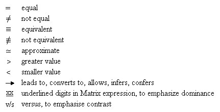
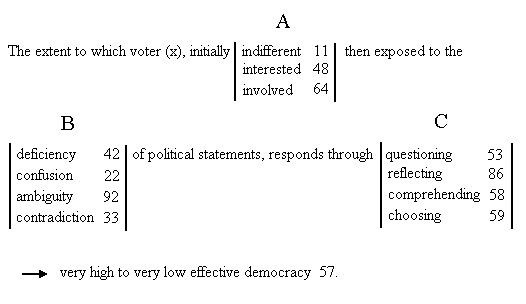
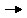
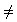

1) the interactive cycle ABCD1D2E (section 2.3)
2) the proactive sequence abc (section 2.4)
and the third, a tensorial relationship linking quality, entity and quantity:
3)
1. Introduction
This paper presents further developments to the holistic approach adopted on Thinking in earlier papers. The value of relationships and visual patterns is emphasized, the usefulness of contrasted key words is highlighted and particular attention is given to the four paradigms of Values, Wisdom, Beliefs and Directions.
Recognising the importance of memory in the thinking process, I would like to introduce, right from the start, three useful relationships, two of them simple acronyms reflecting time flow:2. The holistic framework
1) the interactive cycle ABCD1D2E (section 2.3)
2) the proactive sequence abc (section 2.4)
and the third, a tensorial relationship linking quality, entity and quantity:
3)(section 2.5)
The Matrix provides the conceptual framework within which all concepts and entities are projected. It is a framework which integrates the four elements feel/think/act/time into a single holistic landscape of values and entities, allowing visualisation of conceptual notions and relationships graphically and numerically. Of modular construct with decimal continuity, it forms a universal framework accommodating conceptual totality and functional flexibility.3. The mnemonic challengeA 4-page Matrix Statement giving details of the Matrix construction, its rationale and a number of associated corollaries is readily available. It can be downloaded from the Internet, Web site http://www.ozemail.com.au/~bayerben/
2.1 Matrix expressions
They are numerical codes allocated to concepts and entities, in accordance with perception, to achieve the best fit on the Matrix landscape.
The decimal point in the expression separates the "Radical" on its left which is the selected starting position, from the “Fractal” on its right which is the decimal emphasis representing the direction of change.
For example, leadership (59.86) and consensus (59.75) share the radical 59 (choice/optimisation) but differ in the decimal emphasis, 86 (design) and 75 (reason) respectively.
The determination of a Matrix expression relating to an entity gets its validation from tests of perception (25.45), equivalence (55.383/55.386) and coherence (49.55). For this reason, the Matrix expressions presented in this paper should be considered as a first draft, open to and inviting debate.
2.2 Signs
Simple, universally recognisable signs are useful for linking Matrix expressions in terms of equality, equivalence, value, direction or emphasis. A few fundamental ones are listed:
2.3 The interactive cycle ABCD1D2E
This cycle extends the limited causality relationship.
A is Antecedents (34.65)
C " Consequences (66.96)
D1" Dividends (66.45)
D2 " Directions (59.86)
E " Execution (66.66)
Causality relates cause to effect. It can be expressed as the horizontal sequence Antecedents – Behaviour – Consequences (ABC) complemented by the vertical sequence beliefs – attitudes – Behaviour (baB).2.4 The Proactive Sequence abc
This sequence depicts a major contribution of the thinking processes to progress and constructive change.
a is analysis (82.25)
b " balance (55.55)
c " creativity (86.85)2.5 Tensorial integration
The relationship
Quantity (q) which is a measurementn is the number of multiple entities associated with a given situation and generally indicates the degree of dimensional complexity. Semantic ambivalence which results in differing perceptions can often be traced to elements of the above relationship.
Entity (E) which is a concept
Quality (Q) which is a perception
Information is what we learn, knowledge is what we remember.4. Key words
This popular quip captures well the role of memory in the cognitive process. Only what we remember retains its potential value for reuse. The retention in the memory can be total or just sufficient to know where to re-access the information. Many techniques have been divised to strengthen and develop the memory.Dealing with words, historical mnemonic props have been verses and prose. Proverbs are powerful, carrying the popular wisdom associated with respective languages and cultures. The modern era has brought the highly convenient acronym and the very focussed slogan and sound bite.
4.1 Single and polar words
Single words enhance clarity by capturing and expressing the essence of a complex situation or a wordy description. They need not yet exhibit the elements of polarity.
Polar words are single words which exhibit polarity. At once this evokes potential words with meanings which could fit the converse, inverse or reverse of the word considered.
4.2 Word grouping
When a group of words, selected with the purpose of achieving clarity or stimulating direction, is displayed on the Matrix, the signals provided by the visual pattern can help the perception to interact at the elemental level with the information displayed.
The result for the individual can be endorsement, rejection or reflection - for the collectivity it can be agreement, division or debate - but the communication process in all cases is greatly facilitated.
4.3 The 7 C's
As an example of an important word
group, the 7 C's span seven words starting with Communication and ending
with Coordination
5.1 Facets
Facets are a key element of the Facet technique developed by Professor Louis Guttman and used with high effectiveness in applied social research. By grouping a number of elemental words vertically between bracketing lines in the horizontal flow of a sentence, facets achieve a functional and compact form which allows a large number of permutations to be presented at a glance, simply and clearly.
Facets are most valuable in formulating definitions because they allow complex meanings to be presented in a sequence of simple structures where the qualities of clarity and acceptability can be readily verified.
A faceted statement (referred to as mapping sentence and forming part of a paper to be presented in Berne, Switzerland later this month) is used as an example involving three facets A to C.

Consider the word group forming the title of this paper7. Visualisation
1. Values 89.58
2. Wisdom 58.89
3. Beliefs 49.0
4. Directions 59.86The pattern formed on the Matrix is simple and powerful. Three paradigms (49 belief, 58 right, 59 optimisation) provide high vertical energy in the sixth highway and three paradigms (59 optimisation, 86 design, 89 hope) provide high horizontal quality in the sixth crossway.
6.1 Values
Values refer to what is considered important, desirable or useful at the personal, social or cultural level. They relate to principles, standards and quality.
6.2 Wisdom
Wisdom is about making the right choices , in the circumstances which prevail at various times, in order to achieve the optimum outcomes for ourselves and our environment. This is easier said than done, even if we accept optimistically that we all operate the best way we know how.
6.3 Beliefs
Beliefs are the embryos of attitude and behaviour. They form the core of what, at the personal level, allows us to separate the true from the untrue. They taint our perception of the outside world, influence both our reactive and proactive attitudes and are acted out in our behaviour as we see fit to suit situations.
6.4 Directions
Direction may be the most important element in the social arena, be it at the personal, communal, societal or national levels. Direction is what ensures there is no loss of purpose or waste of resources.
6.5 Polarity
Polarity (55.53) which can add a positive or a negative slant to each word in the group is a serious issue, and although not insuperable can be tricky, especially in situations of controversy with judgment evenly divided, or crisis, with judgment under additional time pressure.
6.6 Duality
The concept of duality (92.66), found in quantum mechanics, provides an interesting parallel to nature’s resolution of direction from uncertainty in the physical universe. In the living world, “free will” adds a further complex dimension and the four words above can only achieve progressive evolution when operating as “paradigms”. When operating as “boxes” they are more likely to lead to regression.
6.7 Quantity and quality
The relationship at section 2.5 linking perceived Quality (Q) to quantity (q) and Entity (E) provides a strong insight into the interdependence of quantity and quality. These elements q and Q are very often treated as acting in opposite directions when in fact, as corroborated by short and long term experience, they interweave in partnerships which through wise choices lead to positive evolution.
6.8 The arrow of time
One element of basic import when considering equivalence is the direction (or arrow) of time. For instance regression (51.0) refers to a perception of moving back in time while elsewhere the time flows on.
Visualization (99.564) is the mental process of seeing, as opposed to the physical retinal vision(14.664). It is linked to vision (99.0) and concepts (86.99) and projects in our mind a picture akin to physical vision. Once expressed or displayed, it becomes a part of the external physical reality.8. Conclusion7.1 Visual displays
The selection for displays includes:
1. The title of this Paper (numbers, black and white)
2. " " " " (letters, coloured)
3. The interactive Cycle (and Causality) ABCDE
4. The Proactive Sequence abc
5. Tensorial Integration
6. Consistency v/s Coherence
7. Consensus v/s Leadership
8. Box v/s Paradigm
9. Pressure (-) v/s Pressure (+)
10. Reactive v/s Proactive
11. Until v/s Unless
12. Freedom
Choice, Ability Responsibility
13. Difficulty Challenge
14. Near enough
Good enough
15. The 7 C’s
16. Discrimination v/s Discernment, Bias (-) v/s Bias(+)
17. The Meaning partners: Perception, Equivalence, Coherence
18. Thinking modes
19. Quote by Sir Laurence Olivier
20. Truth Freedom, Commitment Fulfilment
21. Prevention is better than cure v/s If it ain’t broken, don’t fix it
22. We all operate the best way we know how
23. The tail wagging the dog
24. The only Enemy is Error
25. Tensorial Integration extended
The tensorial characteristics of words can be seen with clarity when projected on the Matrix. This feature allows visual displays to present patterns of relationship which facilitate critical thinking and stimulate creative thinking, as clear and accurate displays of problems suggest visually the appropriate directions to the various solution options.The importance of simple and meaningful presentation supports the methodology of word contrasting, word linking and word grouping. The words can be extended to phrases without causing difficulty because it is the meanings which are captured as individual perceptions and then compared or processed within coherence guidelines.
Words operating as Entities should always be viewed as paradigms, not boxes. Quality and Quantity, often treated as opposites, can and do interweave in partnerships. Wisdom is the desirable point of balance which yields the right direction.